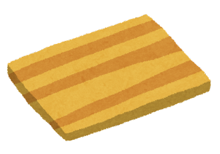

自炊をもっと身近に
自炊をもっと身近に
「一人暮らしで自炊がしたい」
「お弁当を手作りしたい」
「コンビニ弁当じゃ栄養が心配」
「一人暮らしで自炊がしたい」
「お弁当を手作りしたい」
「コンビニ弁当じゃ栄養が心配」

そんな悩みから自炊をしてみようと思ったことはありませんか？
でも自炊って何から始めればいいんだろう？
そんなあなたのためのサイトです。
料理が苦手でも、今までやったことがなくても、
まずは第一歩を踏み出してみませんか？
このサイトでは主に自炊の手順について説明しています。
「難しそう」「面倒くさい」… そんなことありません！
自炊は思ったより簡単！
わかりやすい3ステップにわけてご紹介します。
このサイトでは主に自炊の手順について説明しています。
「難しそう」「面倒くさい」… そんなことありません！
自炊は思ったより簡単！
わかりやすい3ステップにわけてご紹介します。
まずは自炊をする前に準備をしましょう。料理をするには調理器具がないと始まりません。
ここでは必須レベルの調理器具をご紹介します。
必須レベル以外にもあったら便利な道具はたくさんあります。
自炊が楽しい！もっと高みを目指したい！というのであればどんどん買い足していきましょう！
包丁

まな板
鍋

フライパン

菜箸
ボウル
器具が揃ったら次は食材の調達です。
作りたい料理の材料はもちろんですが、それだけではありません。
まずは油、塩コショウなどの調味料は必須です。
たまごやキャベツ、豚バラ、鶏ももなどは汎用性が高く一軍レベルの食材です。
野菜は保管方法を調べ、余ったお肉は冷凍し、腐らせないようにしましょう！
まずは自炊をする前に準備をしましょう。
料理をするには調理器具がないと始まりません。
ここでは必須レベルの調理器具をご紹介します。
必須レベル以外にもあったら便利な道具はたくさんあります。
自炊が楽しい！もっと高みを目指したい！
というのであればどんどん買い足していきましょう！
包丁
まな板
鍋
フライパン
菜箸
ボウル
器具が揃ったら次は食材の調達です。
作りたい料理の材料はもちろんですが、それだけではありません。
まずは油、塩コショウなどの調味料は必須です。
たまごやキャベツ、豚バラ、鶏ももなどは汎用性が高く一軍レベルの食材です。
野菜は保管方法を調べ、余ったお肉は冷凍し、腐らせないようにしましょう！
「はじめから難易度の高い料理は面倒…」
「包丁を使うのが怖い…」
そんな方におすすめな、お手軽に作れる料理の種類をご紹介します。
初心者の方でもチャレンジしやすいジャンルを揃えました。

手間のかかる作業を一気に飛ばす。効率よく作れます。
食材を切って味付けしてチン！タッパーを使うとより効率的です。
具材を切り水気を切って味付け。ナムルなどの料理に使える技です。
麺屋お豆腐に向いた技。手で千切れるものは手でいっちゃいましょう！
具材を切って放置。固い食材は時間をおいてじっくり煮込みます。

時間がある日は作り置きがベスト。タッパーに入れて保管しましょう。
「はじめから難易度の高い料理は面倒…」
「包丁を使うのが怖い…」
そんな方におすすめな、お手軽に作れる料理の種類をご紹介します。
初心者の方でもチャレンジしやすいジャンルを揃えました。
手間のかかる作業を一気に飛ばす。効率よく作れます。
食材を切って味付けしてチン！タッパーを使うとより効率的です。
具材を切り水気を切って味付け。ナムルなどの料理に使える技です。
麺屋お豆腐に向いた技。手で千切れるものは手でいっちゃいましょう！
具材を切って放置。固い食材は時間をおいてじっくり煮込みます。
時間がある日は作り置きがベスト。タッパーに入れて保管しましょう。
自炊だからこそできる、自分の好きな柄の食器への盛り付け。陶器であったり木製であったり素材で食べ物の印象も変わります。
かわいいお皿を集めるのも楽しいですよ！
さらに写真を撮って記念に残しておけば、自分の自炊歴を見返すことができます。
SNSにあげるのもオススメです！自然と作る料理の種類や盛り付け方の工夫も増えます。


自炊だからこそできる、自分の好きな柄の食器への盛り付け。陶器であったり木製であったり素材で食べ物の印象も変わります。
かわいいお皿を集めるのも楽しいですよ！
さらに写真を撮って記念に残しておけば、自分の自炊歴を見返すことができます。
SNSにあげるのもオススメです！自然と作る料理の種類や盛り付け方の工夫も増えます。


自炊はご飯を作るだけではありません。
お菓子作りも立派な自炊になります。
上記で紹介したごはん作り以上のスキルアップにも繋がり、バレンタインでのお菓子作りにも役立つはずです。
特に簡単なのはパンケーキとクッキーです。
この2つは混ぜて焼くだけで出来上がり、アレンジも様々です。
ご飯を食べた後、甘いものを食べたいときにオススメです。
自炊はご飯を作るだけではありません。
お菓子作りも立派な自炊になります。
上記で紹介したごはん作り以上のスキルアップにも繋がり、バレンタインでのお菓子作りにも役立つはずです。
特に簡単なのはパンケーキとクッキーです。
この2つは混ぜて焼くだけで出来上がり、アレンジも様々です。
ご飯を食べた後、甘いものを食べたいときにオススメです。